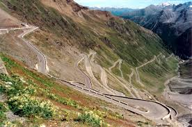
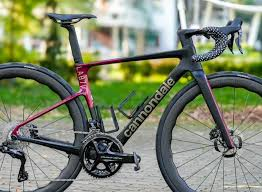
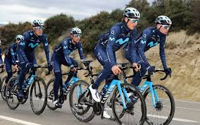

Consejos para mejorar en ciclismo de ruta
Descubre cómo mejorar tu rendimiento en las rutas más desafiantes con estos consejos prácticos.
Leer más →

Las mejores bicicletas de carretera en 2024
Una revisión detallada de las mejores bicicletas de carretera disponibles para ciclistas aficionados y profesionales.
Leer más →

Cómo prepararte para una competición ciclista
Guía completa para preparar tu cuerpo y mente antes de tu primera competición ciclista.
Leer más →